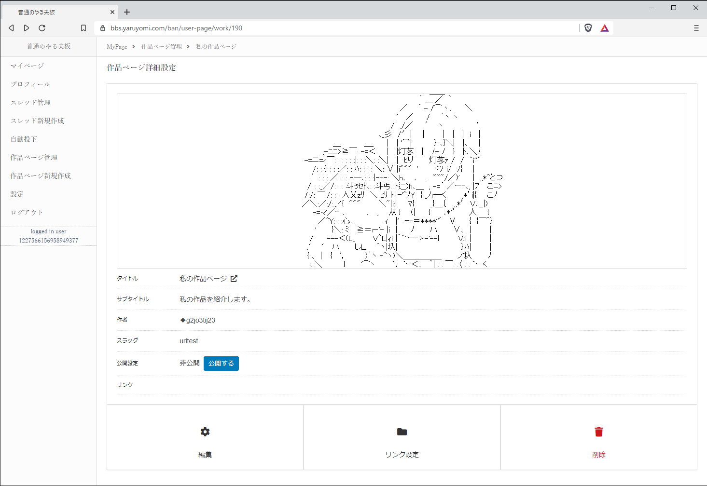
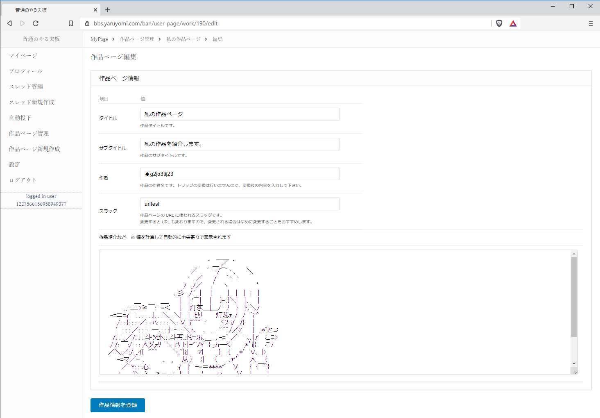
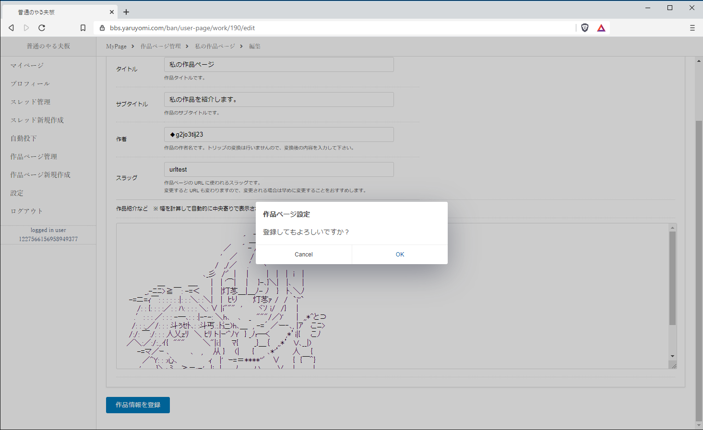
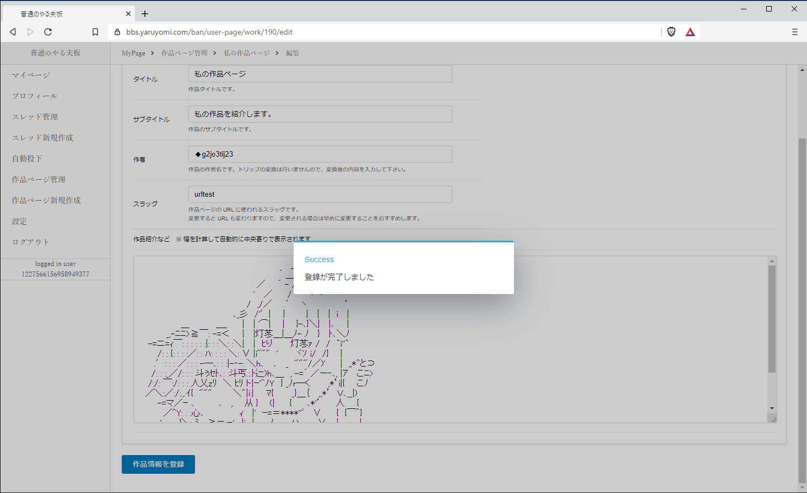
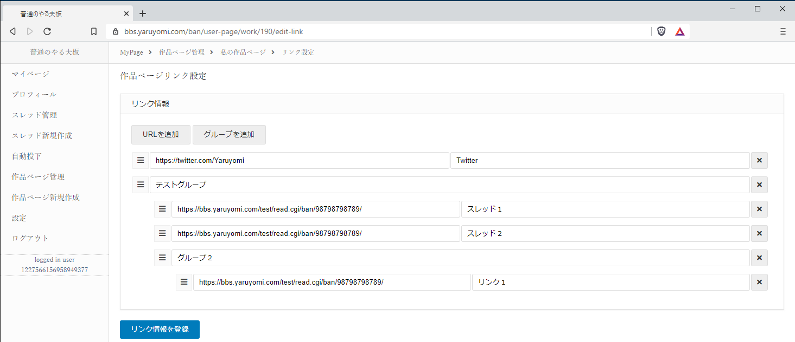
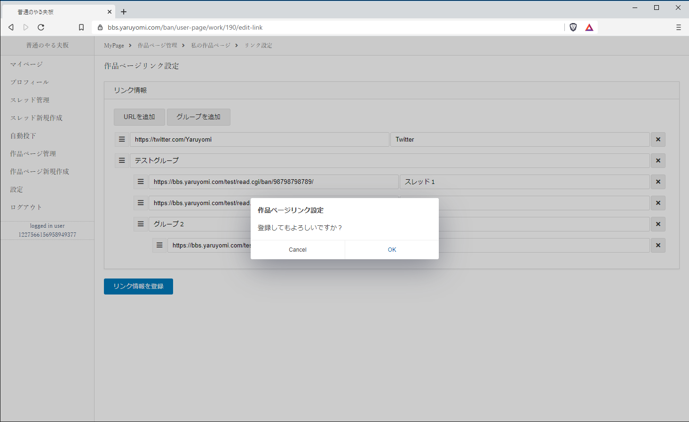
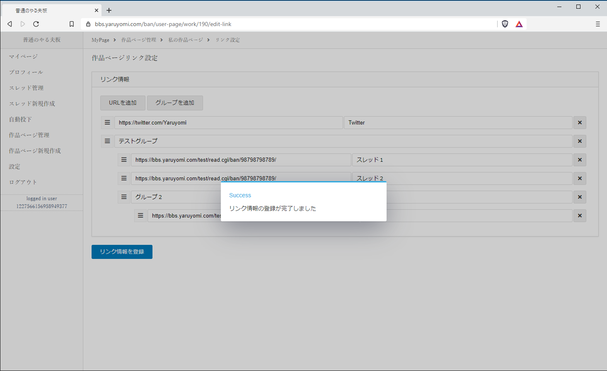
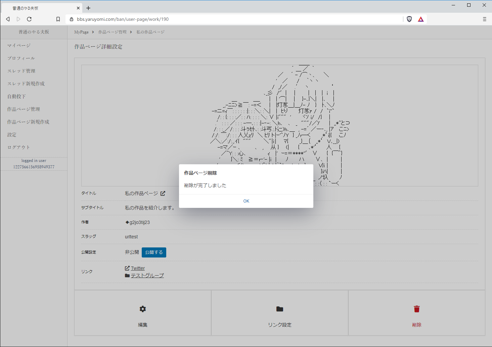

6. 作品ページ管理¶
6.2. 作品ページ管理ページ¶
作品ページ管理ページが表示されます。
6.5. 作品ページの編集¶
作品ページ管理から「編集」を押下し、編集画面へ遷移します。
登録時と同様に作品ページの内容を入力し、「作品情報を登録」ボタンを押下します。
確認ダイアログが表示されますので、「OK」を押下します。
編集が完了します。
6.6. 作品ページリンク編集¶
作品ページ管理から「リンク設定」を押下し、リンク設定画面へ遷移します。
リンクを追加したい場合は「URLを追加」ボタンを押下します。
リンクをグループ（フォルダ）分けしたい場合は「グループを追加」ボタンを押下します。
リンクには、URLとリンク表示名称を入力します。
グループには、グループ名を入力します。
各行はドラッグにて順序の入れ替え、階層の変更が可能です。
行を削除したい場合は、行の右側にある「☓」ボタンを押下します。
リンクの入力後、「リンク情報を登録」ボタンを押下します。
確認ダイアログが表示されますので、「OK」を押下します。
リンク情報の登録が完了します。
6.7. 作品ページの削除¶
作品ページ管理から、「削除」を押下します。
確認ダイアログが表示されますので、「OK」を押下します。
削除が完了します。
警告
完全に削除されますので、復元はできません。